IMPORTANT SPECIAL REPORT:
"NLP – The Science Of Success For The 21st Century"
Oprah Winfrey, Anthony Robbins, Bill Gates and hundreds of other global leaders use NLP to achieve astonishing results…NOW you can do the same and have the life you really want…
"Amazing Science Of Achievement Gives You The Power To Take Complete Control Of Your Life, Reach Your Goals Every Time And Program Yourself For Lifetime Success"
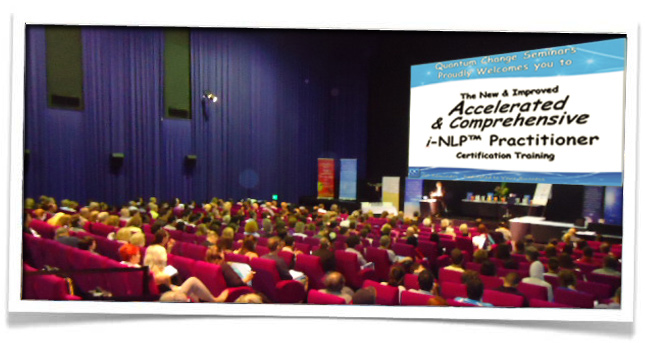
- YES! You Can Expand Your Comfort Zone, Shatter The Hidden Beliefs That Are Holding You Back And Instantly Boost Your Self-Esteem Permanently
- With This PROVEN System, You Can Easily Create The Life You Want – Guaranteed!
- If you've ever wondered why some people are successful in life while others endure a life of frustration and failure…If you've ever wanted to be one of the select group who live their dreams…THE ANSWER IS AT HAND
- BEST PART: You can take advantage of a full 4 Day LIVE NLP Certification Scholarship Training (worth $3,695) PLUS get free gift bonuses worth $1,596.97…a total of $5,291.97 of LIFE CHANGING resources…for just a one-off administration fee of only $97
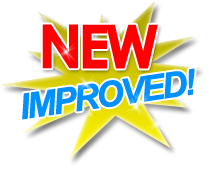
Discover how you can
claim your NLP Certification Scholarship Training place.
Start enjoying the life you've always wanted….
Dear Friend,
Did you know that there is a SINGLE factor that separates people who are successful in life from those who are failures? That component is how you harness your PERSONAL POWER.
People who use their power the right way will take their dreams and make them come true. They are fearless in their drive and will automatically take immediate, massive action and never give up until they are enjoying their dream lifestyle.
On the other hand, people who lack this power still have the same yearnings and desires as everyone else BUT they stay stuck and unfulfilled. They never make their dreams come true. Their lives are an endless series of “What If?” questions that torture them.
Many people feel powerless in their lives.
They live forever at the whim of others – bosses they don't like, banks and credit card companies and others holding them back. They never discover the secret to the incredible power that is hidden inside them.
For most people, harnessing this power is just a dream or a fantasy. But now, YOU can be on the way to achieving your dreams faster than you ever thought possible.
A Proven Success System That Anyone Can Use.
I know it may sound incredible, but there's a PROVEN success system that delivers everything your heart desires and automatically creates the life you really want.
Every thing you ever wanted becoming reality.
I want you to understand just how close you are to your dreams right now, because in just a moment I'm going to reveal more about the amazing “Science Of Success For The 21st Century” that allows you to harness your inner power and immediately start to attract everything you desire at the speed of lightning.
With this PROVEN science of achievement, you can enjoy success in meeting new friends, developing rewarding relationships, finding a better job, becoming financially secure and create the life you want.
And it all happens more easily than you thought possible.
Introducing NLP - "The Science Of Success For the 21st Century" That Will Change Your Life Forever
The single most important key to living your dreams is using your personal power. No matter what your dream is, you make it a reality when you master this skill. You'll be able to handle every challenge along the way and you'll make things happen incredibly fast.
Let me warn you…you may be stunned when you realise just how high you can soar…
…and how you may have been held back in the past. When you are free of the prison of doubts, fears and self-limiting beliefs, you can have a brand new life.
NLP – Neuro Linguisitic Programming - is the key that will turn the lock and release your personal power. In fact, it's the key to UNLIMITED POWER in your life. Think of NLP as the OPERATING MANUAL for your most important possession – YOUR MIND.
That's right!
Those six inches or so between your ears is the key to EVERYTHING.
The problem is that when you arrived on Planet Earth, nobody gave you the instruction manual for your mind!
As a result, unless you've been incredibly fortunate, you're probably not using your mind to its full power…
…and you're not achieving anywhere near what you're truly capable of.
EVEN WORSE…you may be holding yourself back…even sabotaging yourself without knowing it!
But it's NOT YOUR FAULT.
You simply haven't been given the information you need to take full control and take charge of your mind and your life once and for all.
What You Discover Here Will Change your Life Forever...and for the better in ways you may not neven yet imagine
- Why using NLP and your power makes the difference between being a Super Achiever and living a life of mediocrity
- The two sources of power problems in your life and how to correct them…forever
- How to stop being ruled by your past
- How to identify your own perfect path to success
- How to eliminate the fears that drain your power and hold you back
- How to effortlessly tap into your strengths anytime you need to
- Breaking out of a rut! Finding the strength to do something different
- Simple steps to start replacing your limiting beliefs with empowering beliefs
- How to use NLP to enhance your intimate relationships
- How successful people handle mistakes differently to unsuccessful people
- How to ensure your children grow up with a healthy sense of power
- Learn to trust yourself and respect your decisions
- How to approach others with a benevolent spirit
- How to feel that you really can make a difference
…and MUCH more (such as having high expectations for success and ACHIEVING that success consistently).
Never Before Has It Been This Easy
To Have The Power Of NLP For Yourself
If we procrastinate, we're delaying our dreams – maybe for a few years or maybe forever.
And when you delay your dreams…you miss out on life.
The ideal is to live our dreams NOW before it's too late.
It's important to take some action each and every day, no matter how big or how small in pursuit of our dreams. And the way that thousands of people just like you have done that is with the NLP Certification Scholarship Training program.
You might be reading this report and thinking that you'd like to make some changes in your life. But sometimes, even though you'd like a better job, to feel closer to your family or even just feel good about yourself, something stops you from taking action.
One of the characteristics of people who are confident in using their personal power is that they immediately take action. If you want to make your dreams reality, like so many before you have done, I want you to focus your attention on what you truly desire deep inside.
Get a picture of what you want. Make it vivid and focused and as real as possible. Because I'm about to reveal how to make your dream come alive.
Message from Roberta Faddoul
 My name is Roberta Faddoul and over the last 11 years I have helped thousands of people just like you transform their lives in ways they never thought possible.
My name is Roberta Faddoul and over the last 11 years I have helped thousands of people just like you transform their lives in ways they never thought possible.
I've done that by making available an amazing NLP Certification Scholarship Training…a full 4 day top quality program…
…for a minimal investment of only a one-off $97 admin fee (normally $3695)
We have certified over 6000 people in NLP and this scholarship is now available to anyone who is serious about changing their life for the better. So take advantage of this opportunity now and secure your place.
Roberta Faddoul has been featured in:
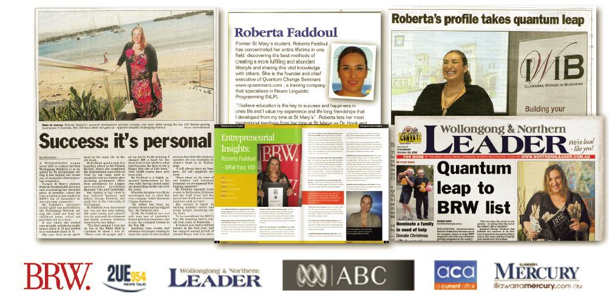
Who Will Benefit From This NLP Certification Scholarship Training?
In short, ANYONE who has the desire for a better life.
If you are a salesperson: Boost your income and make more money working fewer hours
If you are a parent: Help your children grow and learn faster and build a deeper, richer connection with them at the same time. Give them the tools to overcome all the challenges they'll face growing up AND give them a priceless head start in life.
If you are a therapist, coach or educator: Help your clients make MASSIVE SHIFTS in just a few sessions. Become an in-demand professional with a waiting list of clients happy to pay high fees because you GET RESULTS.
If you are a business owner, executive or manager: Breakthrough business obstacles, dominate your market and explode your income. Build high performance teams so you can grow your business and finally enjoy the better lifestyle you deserve
If you are an employee: Get that promotion or better job you deserve and expand your opportunities to do what you really want in life…instead of settling for second best and life in the “Rat Race”.
And here's…
How The NLP Certification Scholarship Training Changes Your Life
The incredible NLP Certification Scholarship Training has helped thousands of people accomplish their goals and dramatically improve their lives. Here are just a few of the life transforming changes you'll enjoy in just a few days when you take advantage of the NLP Certification Scholarship Training! (normally $3695 now for just a one off admin fee of only $97)
You have incredible powers that can change your life! You just need the keys to make some simple changes…
- Eliminate stress from your life and replace it with unstoppable confidence
- Take control of your life and watch your dreams come true as if by magic
- Create fulfilling relationships regardless of your past or current situation. The partner of your dreams is close by
- Be more confident in social situations as you meet new friends and build connections
- Eliminate debt and create financial abundance
- Boost your creativity on the way to a higher paying job or a more successful business
- Increase self-esteem and self-confidence
- Stop worrying and start enjoying your new life
- Enjoy inner peace and walk around with a smile on your face
- Succeed in business and your career no matter what is happening in the world economy
- Enjoy better health than ever before and allow your body to naturally heal itself
- Meet the perfect partner and enjoy the relationship you desire
- Eliminate negative feelings towards people (including family and friends) and replace them with feelings of love
- Take charge of your life and watch obstacles melt away
- Get a better job under the conditions that you want OR become your own boss if that's what you want
- Give yourself a pay rise every week.
- Secure a promotion and the recognition you deserve.
NLP gives you the power to create wealth, success, romance, helps you lose weight, builds self-confidence – anything you want in life.
It will also help you find your true calling in life, give direction and meaning to your life and allow you to feel good about yourself as you smoothly accomplish your goals.
But to have all this, you must first discover for yourself how NLP works and how YOU can apply this incredible SUCCESS SYSTEM in your life.
And if you're thinking, maybe NLP can work for others but not for me…you couldn't be more wrong!
The NLP Certification Scholarship Training is PROVEN to work for anyone who is prepared to take action.
PLUS…you also get a 30 day action plan to put the power of NLP to work for you straight away.
More about that later…
…but first allow me to tell you about Vicki from Sylvania in New South Wales.
When Vicki Discovered NLP…
Vicki wanted to change her life…
…but she had doubts about NLP and if it could help her.
You see, she'd been disappointed before by events where she thought she was going to get everything she needed…
…only to find that it was one long sales pitch and that she would have invest thousands of dollars to discover the real inside secrets.
So she was sceptical. Very sceptical, in fact.
Fortunately, she had the good sense to keep an open mind and not give up on her dreams.
Vicki took action and attended the NLP Certification Scholarship Training and…
…Her Life Changed Instantly, Forever!
In just a few short months, here's what happened for Vicki…
- Her family life and relationship with her husband was transformed
- Her fitness and overall health and vitality improved dramatically and she felt great!
- She found what makes her happy in life and became inspired with a completely new outlook
…PLUS at the training she connected with dozens of like-minded individuals and built a network of friends that has enriched her life and supported her on the path to success.
So NLP works – even if you're sceptical (like Vicki was!)
How did Vicki achieve all this?
She TRANSFORMED herself by taking advantage of the LIVE TRAINING and coaching at the NLP Certification Scholarship Training.
You see, NLP is a PRACTICAL SCIENCE…
…and the best way to grasp its power is to EXPERIENCE it for yourself.
The best way to master the science of NLP is to DO IT YOURSELF.
If you could change your life by reading a self-help book you would have done it years ago. The answer isn't another book or another fast-talking infomercial guru.
You need to create a new way of living and develop your own personal power with NLP.
When you've completed the NLP Certification Scholarship Training…you'll know how to use your personal power whenever you wish for the rest of your life
With NLP at your command, you'll create success after success after success. You'll enjoy a wonderful future as you continually enjoy a better lifestyle and make your dreams come true.
4 Days That Will Transform Your Life
The NLP Certification Scholarship Training takes place over 4 fun, high-energy days in convenient locations in SYDNEY, BRISBANE, MELBOURNE and PERTH.
Over the course of those 4 days, you'll receive a complete international level NLP Certification training.
Nothing is held back. This is the very same training that others charge a minimum of $3,695 for but you only pay a one-off $97 admin fee.
You'll get the complete system and all the tools to be an accomplished NLP Practitioner…
…with the power to take charge of your life.
Here are just some of the success secrets…
- The single most important concept about how to transform your behaviour. It's so simple but it will forever change your life
- The secrets of how your mind really works, how all learning and behaviour change takes place and how to take charge of your life
- Why most people fail in life despite their best efforts (it's not because they don't try, it's because they don't understand these 20 secret “Driving Forces”)
- Goals are the KEY to success but most people don't know the RIGHT WAY to set goals. There are 7 essential factors you need to know
- READ MINDS with the amazing “Eye Movement” technique
- The “Golden Rules” that give you the power to quickly and easily connect with people so they like and trust you almost IMMEDIATELY
- How to instantly turn on your personal power – be full of energy, totally confident, creative, powerful, whatever you desire – anytime
- Banish crippling fears and phobias with the incredible FAST PHOBIA TECHNIQUE
- Advanced techniques to reshape the past and create the future that you want
- 7 steps to transforming any idea into a rock solid reality faster than you ever imagined possible
- The famous NLP “Meta Model” and how to use it to make astonishing breakthroughs
- The internal “programs” that drive every action you take. Here's how to understand them and fix problems easily
- The Milton Model – the distilled genius of legendary hypnotist Milton Erickson you can use to be a powerful and persuasive communicator
…and MUCH more...
And this training is HANDS ON…
…you get to experience and apply the power of NLP for yourself. This is not a seminar where you simply sit back and listen…
...you will be TRANSFORMED and start to create your NEW and brighter future straight away…
“Life-changing”, “Amazing”, “Incredible breakthroughs”…
…are the typical reactions from people who attend the NLP Certification Scholarship Training.
Many people overcome crippling phobias (a terrible fear of spiders, for example)…
…others discovered how to empower themselves almost instantly to get past obstacles that have been holding them back for years…
…and many people rid themselves of destructive or unhelpful habits like biting their fingernails (almost down to the bone in some cases).
And that's just the start as you'll discover how to live life more fully at a level of joy, passion and abundance that you never dared to dream was possible for you.
One reason for these incredible results is the QUALITY of the training and the presenters.
Allow me to introduce…
Your International Faculty Of Trainers And Coaches
You'll have the benefit of not just one, but TWO internationally acclaimed presenters and trainers…
Introducing International Trainer George Faddoul…
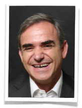George Faddoul is the widely respected author of the best-seller "How To Get A Bigger Bite Out Of Life" and "The Modern Day Alchemist" with further exciting works on the way, including "The Evolution of i-NLP". His work is also featured in "The Secrets of Great Coaches Exposed".
George is a Practitioner and Master Practitioner of NLP, Time Line Therapy and Hypnosis as well as a Certified Trainer of NLP and Hypnosis and Master Trainer of Time Line Therapy.
George is one of the brightest minds in training, coaching and corporate consulting. He speaks from the heart and is truly engaging, fun and an honest NLP Trainer who actually walks the talk not just talks the talk and you can train with him right here in Australia (for peanuts, normally $3,695 REGISTER NOW for your Scholarship only $97 admin fee).
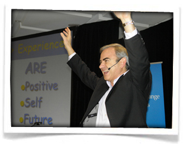 Recognised by many as Australia’s leading trainer and authority on NLP, George has trained more people in Australia than most other trainers combined. In demand throughout the world, George travels frequently and regularly conducts training programs in the USA, Europe and the Middle East.
Before devoting his time to discovering the best methods of helping people achieve their full potential and sharing this vital knowledge, George enjoyed a highly successful career in business. He started several highly successful businesses and acquired a reputation as a marketing and advertising expert.
…and a stellar group of international experts
Because QC Seminars is one of the leading NLP training organisations in the world, we have an unrivalled network of friends, associates and business relationships in the NLP community around the globe.
So, at most of our training events, you get the benefit of special guest trainers joining lead trainer George Faddoul.
Every single one of these guest trainers is known to us personally and has been carefully selected. Only the VERY BEST trainers are invited to join our faculty and typically they will be qualified in NLP at the highest level PLUS have high-level credentials in related fields such as education, business, communication, psychology and hypnosis.
That all means that you get the very best training in NLP…even better, we are continually developing and improving our training to make sure you enjoy the best experience and get the results you want.
Now you may be wondering…
How Much Is A 4 Day, Hands-On, Life Changing Training Worth To You?
When you think about it, a training like this that unlocks your personal power to create whatever you want in life could easily be worth $5,000 or even $10,000.
And, in fact, pretty much anywhere else, that's what you'd have to invest for a NLP Certification level training. The minimum you'd pay would be $3,695…
…and it's well worth the investment.
But you won't have to find anywhere near that amount to attend this NLP Certification Scholarship Training. Our philosophy is to give back so you have the oppurtinity to attend the certification training with a FULL scholarship and all you have to come up with is a modest $97 one-off fee to help cover some of the administration costs of the training.
All you have to come up with is a modest $97 one-off fee to help cover some of the administration costs of the training.
(And this only covers a fraction of the costs, as you'll see when I explain the incredible EXTRA FREE GIFT BONUSES worth $1,596.97 you will receive.)
So, the obvious question is…
Why Am I Giving You
$5,291.97 Worth Of Training
And Success Resources FREE?
Well, there are 3 reasons…
- Firstly, I am passionate about transforming lives by making this opportunity available to everyone. In the past it's only been available to people who were able to invest $3,695 or more. I've personally transformed my life with the power of NLP and so have thousands of people just like you (take a look at the many success stories in this letter). I want to help thousands more to do the same. It's our way of giving back to the community.
- Secondly, I can appreciate the fact that you may be sceptical about NLP and whether it really lives up to the promises. My intention is to make NLP available to everyone with an irresistible offer so that even the most sceptical person would be crazy not to join us and find out what all the fuss is about.
- Thirdly, I confess, I want to get you “hooked”. That's right, I'm taking the chance that you'll be amazed, thrilled and delighted by your experience at the NLP Certification Scholarship Training. I'm counting on you finding this training so valuable that you'll want to take advantage of our other training programs and that you'll want to be part of our community of success-minded individuals and as a raving fan let your friends and family know about us.
You Are Protected By My 100% Risk Free, "No Nonsense" Guarantee
That's right, even though you only have to invest a nominal one-off $97 admin fee (normally $3695) to attend this NLP Certification Scholarship Training, you MUST be thrilled and delighted with your decision or I insist that you get your money back IN FULL.
So attend the training and…
- Discover the step-by-step proven success strategies developed through years of research that will transform your life
- Network and brainstorm with all the switched-on success-minded individuals at the event
- Immerse yourself in the step-by-step course materials for creating your success
In the unlikely event that you are not convinced that the NLP Certification Scholarship training is outstanding value and that attending was a not-to-be-missed opportunity for you…
…then simply speak to me or one of my team at the event before the end of the first day. Tell us that this wasn't the right decision for you and you'll receive a courteous refund ON THE SPOT.
You even get to keep all the bonuses and course materials you received on the first day as a “Thank You” for taking a look at the training.
I think you'll agree that's a very fair arrangement.
And remember, there's MORE. You also get these Special Gift Bonuses…
6 Special FREE Gift Bonuses (Worth $1,596.97)
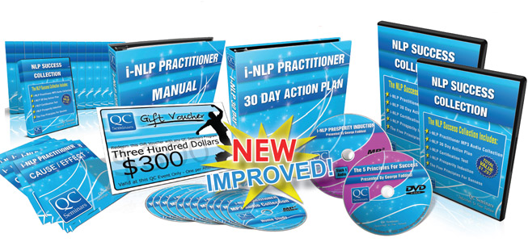As well as the 4-day LIVE NLP Certification Scholarship Training
(itself worth at least $3,695) you also get these incredible bonuses…
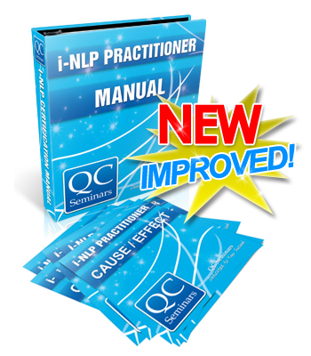At other NLP training events, you'll most likely have to pay extra if you want the training manual. Not at the NLP Certification Scholarship Training! You get the complete 244 page manual (worth at least $595) absolutely FREE.
Full details of all the material covered PLUS all the exercises PLUS “Check Lists” and supporting material PLUS a comprehensive NLP Glossary PLUS some surprise EXTRA BONUSES.
You'll want to take plenty of notes during the training but you can relax because with the training manual you'll have a complete reference you can refer back to and use any time you like.
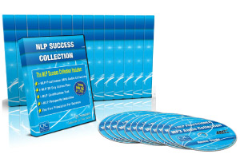As well as the comprehensive training manual, you also get the full 15 hours of audio recordings of the training.
So you can go back and listen again to particular sections and even review the ENTIRE TRAINING as many times as you wish! This is a GREAT training resource to help consolidate your learnings.
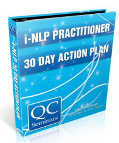To make sure you transform yourself and create the new and better life that you want as FAST as possible, you get our QUICK START i-NLP 30 Day Action Plan.
Follow the simple steps outlined on a daily basis and you'll see amazing changes unfold. It's like having your own personal coach to keep you on track.
The plan comes in its own 108 page manual.
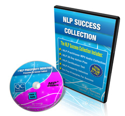Want to make a fast start on retuning your mind to success and prosperity?
Simply sit back, relax and play this amazing audio CD.
Simply by listening:
You'll be reprogramming yourself and training your mind to be in tune with your new success and prosperity goals
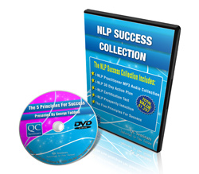Discover the differences between those who are super successful and the average person who struggles through life.
Apply these principles in your life, add the power of NLP, and you'll experience remarkable changes FAST.
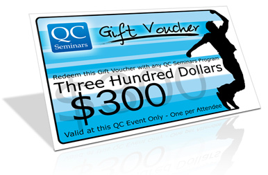That's right, you get a $300 GIFT CERTIFICATE to redeem when you invest in any of our other life-changing SUCCESS training programs.
Together these FREE GIFT BONUSES are worth $1,596.97…and they're all yours absolutely FREE when you claim your NLP Certification Scholarship Training place.
Let's recap…
7 Reasons To
Claim Your Life Changing NLP Certification Scholarship Training NOW
- REASON #1: NLP – “The Science Of Success For The 21st Century” – is a PROVEN system. For over 30 years people like Oprah Winfrey, Anthony Robbins and Bill Gates have applied NLP to produce amazing results year after year
- REASON #2: You get a FULL NLP Certification Training that normally would require an investment of at least $3,695 for just the low, one-off administration fee of $97
- REASON #3: You also get $1,596.97 of valuable FREE GIFT BONUSES making a total of $5, 291.97 in life changing education and success resources
- REASON #4: You have my personal promise and guarantee that this training is right for you or you get your money back in FULL
- REASON #5: You get the benefit of not one but TWO internationally acclaimed NLP Master Practitioners and Trainers…George Faddoul AND Nick LeForce
- REASON #6: You'll see measurable results FAST. With NLP there's no having to wait months or even years to make changes. Change can happen almost instantly
- REASON #7: The sooner you claim your NLP Certification Scholarship Training place, the sooner you'll be enjoying the success and lifestyle you've always wanted
...PLUS there's another very good reason to ACT NOW.
Places at these NLP Certification Scholarship Training events are STRICTLY LIMITED and these popular events usually sell out FAST!.
YES, we hold these training events several times a year but why risk disappointment and having to wait to enjoy a brighter future?
Your Questions Answered
The NLP Certification Scholarship Training

“You may still have some questions about the NLP Certification Scholarship Training. Below I have listed the most frequently asked questions and my answers to them. Take a look below and see if your questions are covered. These questions and my answers will give you a clear idea of what’s involved in the NLP Certification Scholarship Training and how it can help you create the life you want for yourself.”
***********************************************************************************************************
Frequently Asked Questions
What is covered in the course?
What will I actually learn?
What is included with the Scholarship?
Why should I do this course with QC Seminars?
Who will be conducting the training?
Where does the training take place?
What are the dates for the training?
What is the “30 Day Action Plan”?
Do I have to do the “30 Day Action Plan”?
What will I be able to do with the certification?
Is the course recognized and by whom?
I’ve already done some NLP training. What will I get out of this training?
What do I need to bring to the event?
Do I need to do any reading or other preparation before attending the training?
Why is the training only 4 days? That seems very short for a full NLP Certification Training.
Why are you providing this training for just the one-off administration fee of $97?
***********************************************************************************************************
What is covered in the course?
What will I actually learn?
The NLP Certification Training covers all the key techniques you need to know to become a certified NLP Practitioner. This includes Reframing, The Meta Model and the Fast Phobia Model. With these skills you’ll have much greater control over your life and be able to get what you want faster and more easily.
What is included with the Scholarship?
Included in the one off administration fee of $97 is everything you need to become certified. This includes your comprehensive NLP manual, the 30 day action plan, a bonus MP3 recording of an NLP Practitioner training and other bonuses including a prosperity induction and “The 5 Principles for Success” presented by George Faddoul.
Why should I do this course with QC Seminars?
Nowhere else can you get a scholarship and become a fully certified NLP Practitioner for just $97. In addition, more people in Australia have gained their NLP Certification with QC Seminars than through all other training companies combined. Put simply, there is nowhere else you can get this top-quality training, in such a convenient format and at such a modest investment.
Absolutely. Attend the first day of the training and discover for yourself the life-changing success strategies of NLP. At the end of the first day, in the unlikely event that you are not thrilled and delighted then simply ask one of the crew for a refund and you’ll get a cheque on the spot. What’s more all the bonuses and course materials that you receive on the first day are yours to keep.
Who will be conducting the training?
Our trainers are George Fadoul and Nick Le Force. Both are highly qualified and widely respected in the international NLP community. Most of the trainings will be conducted jointly, although some will be conducted by one of the trainers only.
Where does the training take place?
The training takes places at convenient locations in Sydney, Brisbane, Melbourne and Perth. Check our website at www.qcseminars.com for the latest information.
What are the dates for the training?
The training is held several times a year. Check our website at www.qcseminars.com for the dates of the next scheduled training series.
What is the “30 Day Action Plan”?
The “30 Day Action Plan” is the home study component of the Certification training. The 4 day live training introduces and explains all the key NLP techniques. The “30 Day Action Plan” expands on and recaps the material in the live training so that you have all the knowledge required to become a certified NLP practitioner.
Do I have to do the “30 Day Action Plan”?
If you wish to gain your formal NLP Certification, then you will need to complete the “30 Day Action Plan”. However, you may choose not to and you will still gain huge benefits from the techniques and strategies taught at the live training.
How does the certification process work?
To gain your certification, you will need to successfully complete an “Open Book” written test. You can complete this in your own time and at home. To be successful in the test, you will need to complete the “30 Day Action Plan”.
Do I have to complete the certification process?
It’s completely optional, but unless you complete the certification process you will not be formally recognised as an NLP practitioner.
What will I be able to do with the certification?
As a certified NLP Practitioner, you will be able to use all the strategies and techniques you learn to both improve your own life and to help friends and family. In addition, if you are currently studying at university, you may be able to obtain a course credit as a result of gaining your NLP Certification.
If you wish to practice professionally as an NLP coach or therapist, we highly recommend that you undertake our NLP Master Practitioner Training.
Is the course recognized and by whom?
There is currently no governing body with regards to NLP. All current boards of NLP are privately owned and therefore, set their own standards. As a company, QC Seminars meet the standards and requirements of the Californian Institute of NLP for all of our NLP certification programs.
We are currently in the process of setting up the first board of i-NLP (the proprietary form of NLP taught by QC Seminars). When complete, the board will be the biggest board in Australia.
You may also be able to use your NLP Certification to offset modules of a university degree.
I’ve already done some NLP training. What will I get out of this training?
Firstly, revising material will be very beneficial for you. (“Repetition is the mother of skill.”) Secondly, every teacher and training program is different. By experiencing a new perspective and approaching the material in a different way, you will most likely gain new insights, a deeper understanding of NLP and greater skill in using these powerful techniques and strategies.
Remember, you also get a set of valuable bonuses (including a complete recording of the NLP Certification training) that are unavailable elsewhere.
What do I need to bring to the event?
To get the most out of the training, bring an open mind, a willingness to learn and a commitment to participate 100%! Apart from that…
Preparing for your NLP Training
- You may wish to bring a jacket or jumper in case the room temperature is cooler than you prefer
- You will receive a comprehensive manual but we suggest you bring some pens and a notebook
- If you have special needs (such as a pillow for your back) please bring appropriate items with you
- Water will be provided throughout the training, but meals and other refreshments are not provided. So we recommend you bring snacks and beverages of your choice to maintain your energy levels throughout the program
Do I need to do any reading or other preparation before attending the training?
There is no pre-study or other preparatory work required before attending the training. However, so that you get the most out of the training we recommend that you spend some time thinking about and writing down what you want to achieve as a result of attending this life-changing program.
Why is the training only 4 days? That seems very short for a full NLP Certification Training.
The course is based on a 24 day model, but we want to make NLP available to as many people as possible. So we have created a comprehensive and accelerated 4 day training program. After the live training, there is a home study component for you to complete. This is the “30 Day Action Plan” that will complete the training so that you have all the knowledge and skills required to qualify as a certified NLP Practitioner.
Why are you providing this training for just the one-off administration fee of $97?
Well, there are 3 reasons…
- Firstly, I am passionate about transforming lives by making this opportunity available to everyone. In the past it’s only been available to people who were able to invest $3,695 or more. I’ve personally transformed my life with the power of NLP and so have thousands of people just like you (take a look at the many success stories in this letter). I want to help thousands more to do the same.
- Secondly, I can appreciate the fact that you may be sceptical about NLP and whether it really lives up to the promises. My intention is to make NLP available to everyone with an irresistible offer so that even the most sceptical person would be crazy not to join us and find out what all the fuss is about.
- Thirdly, I confess, I want to get you “hooked”. That’s right, I’m taking the chance that you’ll be amazed, thrilled and delighted by your experience at the NLP Certification Scholarship Training. I’m counting on you finding this training so valuable that you’ll want to take advantage of our other training programs and that you’ll want to be part of our community of success-minded individuals.
Just to be clear…there’s no catch and nothing is held back.
You’re getting a full, complete NLP Certification training. At the end of the event, you’ll have everything you need to unleash your personal power and create the life that you want for yourself.
This Will Be The Most Intense, Life Transforming And Liberating 4 Days Of Your Life
Let's recap what you'll recieve....
As well as the FULL 4-DAY LIVE NLP CERTIFICATION SCHOLARSHIP TRAINING (value $3,695).You get these extra FREE GIFT BONUSES (value $1,596.97).
This total $5,291.97 worth of value for just a one-off admin fee of only $97.
- Complete NLP Certification Training Manual: You get the complete 244 page manual (worth at least $595) absolutely FREE. (valued at $347.97)
- Full Audio Recordings Of The NLP Certification Scholarship Training (full 15 hours of audio recordings of the training. (valued at $595.00)
- i-NLP 30 Day Action Plan Coaching: Create the new and better life that you want as FAST as possible, you get our QUICK START i-NLP 30 Day Action Plan (108 page manual). You’ll see amazing changes unfold. (valued at $300.00)
- Property Induction CD: What's the difference between the mega successful and the average person. And how you can instantly and automatically change your life by applying these principles to your everyday life (valued at $27.00)
- 5 Principles Of Success DVD: Want to make a fast start on retuning your mind to success and prosperity? Simply sit back, relax and play this amazing audio CD. Training your mind to be in tune with your new success and prosperity goals (valued at $27.00)
- A $300.00 gift voucher to use towards our other training courses.
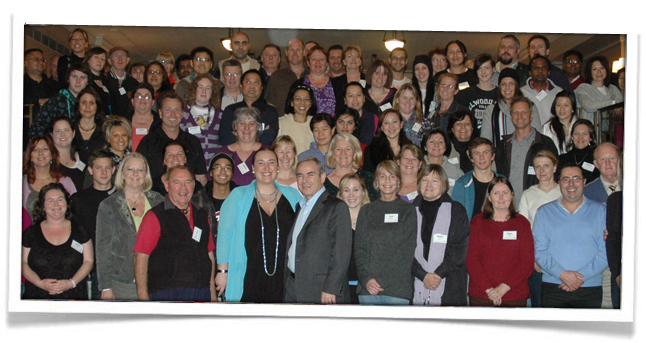
With Love And Success
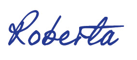Roberta Faddoul
P.S. Remember you have absolutely nothing to lose and EVERYTHING to gain when you accept your NLP Certification Scholarship Training place. Your investment is completely protected with my 100% money-back guarantee.
P.P.S. With your NLP Certification Scholarship Training you get a FULL 4 day LIVE training PLUS FREE GIFT BONUSES for a total value of $5,291.97 for ONLY a one-off administration fee of $97. Act now as scholarships places will FILL UP FAST!
P.P.P.S. Places at the next series of trainings are STRICTLY LIMITED. So avoid disappointment and secure your NLP Certification Scholarship Training place right NOW…
Or call 1300 733 642 to claim your place.
Roberta Faddoul
“Quantum Change Seminars CEO”
Co-developer of the revolutionary “Quit Cigarettes In 60 Minutes”™ Program
NLP Master Practitioner, NLP Trainer and Master Hypnotist
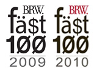
"…an abundant life where I'm in control"
It has been fun, uplifting and inspiring. It has reignited belief in myself to utilize the power of the universe to achieve whatever I want in all areas of my life. I look forward with more belief and determination to enjoying living an abundant life where I'm in control.
Narelle Gordon
Cooranbong, NSW
“This training has been such an amazing opportunity”
“It has truly given me every tool I need to go out there and make it happen! I'm so excited! Can't wait to start! The universe is just dying to give me everything I want!
This training has been such an amazing opportunity. I'm so grateful! Thank you so much!”.
Vicki Angelopoulos
Sylvania, NSW
"It was an amazing experience."
I not only have the knowledge and skills to be an effective leading NLP Master Practitioner to help my clients, but also have all the business and marketing ideas to run a practice and source clients.
Peter Wetters
Coogee, WA
“I’ve embarked on my NLP journey”
I now know where I want to go, who I want to be and how to get there!! I am truly happy with everything, the training and I have met some pretty amazing people along the way. I have an amazing connection with myself now and I can’t wait to go back to Perth and start my journey. Thank You!
Jeremy Walker
Aspley, QLD
"…an abundant life where I'm in control"
It is a beautiful experience. I have met so many wonderful people and that’s what NLP is about, having a human experience, NLP helps us realize how much more we can be , through others.
NLP is a decision. I have decided that when I go out into the world amazing things will happen.
Keti Trajanovska
Joondanna, WA
“WOW! Exciting times ahead!!!”
Although I had a pretty good idea of where I was heading before this course, not only did it cement the fantastic knowledge I had absorbed in the NLP Practitioner course, but also it allowed me to discover some new skills (a whole bunch of really good stuff) plus remove some potentially limiting belief. I can now see things differently and far more vividly.
Tony Inman
West Perth, WA
"Both George and Nick were very inspiring."
I have learnt to apply many techniques during this course which have helped me to let go of a number of limiting beliefs and decisions. I have also learnt to install positive goals and visualize a brighter future which is achievable. I feel confident to apply NLP for may others who come my way. I will watch the DVD’s to help me further.
Rajini Arulanathan
Westmead, NSW
"I am excited about watching the future unfold and my future goals (visions) becoming reality!"
I have processed SOOO much – found issues I didn’t even know existed, well limiting behaviours!!! The setting, the atmosphere, the content covered, all excellent. Many many thanks to Quantum Change Seminars and all associated with QC.
Cynthya Popperwell
Seaforth, QLD
"NLP is life enhancing and life changing."
Thank you Nick an George for 6 days of insightful teaching. You have a warmth in your style that touches everyone in your audience.
Leonie O’Connell
Winmalee, NSW
"This course delivers just what it promised."
Comprehensive training, loads of practical experience and fun fun fun!
Ann Beck
South Kingsville, VIC
“NLP has turned my dreams into reality”
I have learnt a lot , met a lot of people and made new goals and am so excited to put my thoughts, ideas, dreams on paper and start spreading my love through teaching people about our greatest gift LOVE. OH…and I’m coming back to do the Trainers Training. AMAZING!
Ricardo Afonso
Hoppers Crossing, VIC
“I learned some very valuable process and techniques which I can integrate into my daily life.”
I now have a heightened awareness of the language I use and the language of others and options to respond. I have met many great “new friends” with whom I’ll keep in contact. Thanks to George, Nick and Roberta along with the QC “Crew” for a great 6 days! Fabulous!
Pamela Gee
Kilaben Bay, NSW
“Nothing is Standing in My Way of Dominating My Industry”
How limiting/positive beliefs and behaviours are formed and the subsequent methods to find ideal outcomes were explored in detail. My neurology has expanded and I am a completely different person since I have challenged my beliefs and behaviours. Thank you!
Sean Davis
Rozelle, NSW
“If you want to realize your potential, invest in yourself by doing this training.”
I have gained skills to help myself and others. With this new knowledge I can now release more of my potential as a human being. The techniques to help clear old un-productive and limiting belief systems is such a powerful tool have. Just this alone has made it worth the investment. All made possible because George and Nick who are such teachers who have made the process informative and fun. NLP skills are for everyone. I wish I had these skills when I was in school.
David Lukas
Byron Bay, NSW
“NLP - The gift that keeps on giving”
I now have an amazing library of resources to help me fulfill my goals in life while helping others. I believe these resources can be used in all areas of my life on a daily basis. I know all these resources are within and available when I need them at any given time therefore it is self reliant. That is a gift worth receiving!
Michelle McLeod
Surry Hills, NSW
“It got me way out of my “familiar” zone - formerly my “comfort” zone.”
I have obtained so much new information and skills and also had confirmation of what I already instinctively knew. Thank George for pointing out that money does need to be a focus for me! And thanks Nick and George for pushing my buttons, challenging my beliefs, giving me a fun environment to di it in and send me home with a new confidence I only thought other could have.
Rosemary Price
Sawtell, NSW
“A great experience that I would recommend that everyone do.”
It was life changing for myself and other and opened my mind and learnt new ways of communicating and understanding my and other people’s real needs in every situation. The training and exercises were easy for anyone to do and there were people from all walks of life equipped with new skills that can be used at home, in relationship, at work, in study, in social situations, in every aspect of life. The trainers were genuine and so were the students.
Neil Graham
Florey, ACT
“Made me a better person…”
The skills and techniques that I learnt in the Master Practitioner Training will be invaluable in my work both as a natural therapist and as a teacher. On a personal level and in my life within the family and community my communication skills can only improve as I implement the things I have learnt.
Lorraine Parry
Buderim, QLD
“Ask and you shall receive its amazing how when we open to receiving how the universe delivers.”
It helped me get things out of my life that I had been hanging onto for a very long time, the thought I had got rid of. Was a great relief to get all limiting beliefs out of my system as well.
Liz Allen
South Windsor, NSW
“Take control of your life today.”
I leave with the most precious gift to move forward with the baggage removed and the tools to enjoy life in a happy, prosperous and generous way.
Stefan Galamaga
Mt Richon, WA
"It was knowledgeable, informative, open and very fulfilling."
I learned so many processes that can be applied so readily and easily in everyday situations, it was awesome. It made me realize how we can be carrying baggage from past experiences we sometimes don’t even know we have and how they can be released by following the NLP process.
Barbara Houghton
Jimboomba, QLD


Roberta Faddoul · Quantum Change Seminars
Address: 2/22 Bridge Rd Glebe NSW 2037 Australia
Phone: 1300 733 642 · Fax: (02) 9660 5238 · Email: support[at]qcseminars.com
All Content Copyright © Roberta Fadddoul 2010